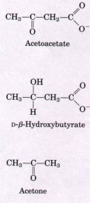
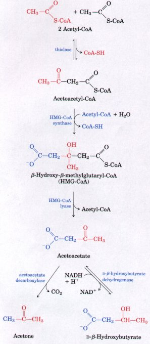
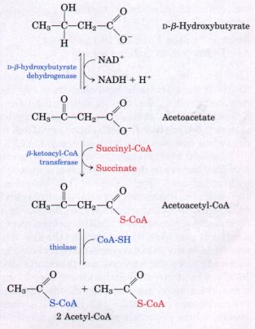
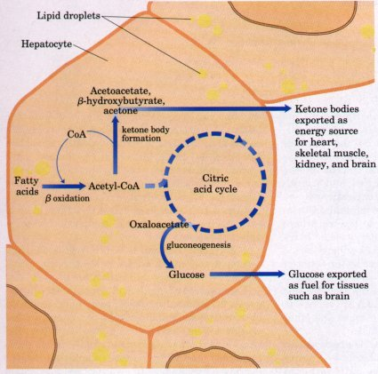
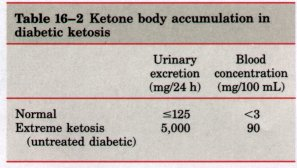

In human beings and most other mammals, acetyl-CoA formed in the liver during oxidation of fatty acids may enter the citric acid cycle (stage 2 of Fig. 16-7) or it may be converted to the "ketone bodies" acetoacetate, D-β-hydroxybutyrate, and acetone for export to other tissues. (The term "bodies" is a historical artifact; these compounds are soluble in blood and urine.) Acetone, produced in smaller quantities than the other ketone bodies, is exhaled. Acetoacetate and D-β-hydroxybutyrate are transported by the blood to the extrahepatic tissues, where they are oxidized via the citric acid cycle to provide much of the energy required by tissues such as skeletal and heart muscle and the renal cortex. The brain, which normally prefers glucose as a fuel, can adapt to the use of acetoacetate or D-β-hydroxybutyrate under starvation conditions, when glucose is unavailable.A major determinant of the pathway taken by acetyl-CoA in liver mitochondria is the availability of oxaloacetate to initiate entry of acetyl-CoA into the citric acid cycle. Under some circumstances (such as starvation) oxaloacetate is drawn out of the citric acid cycle for use in synthesizing glucose. When the oxaloacetate concentration is very low, little acetyl-CoA enters the cycle, and ketone body formation is favored. The production and export of ketone bodies from the liver to extrahepatic tissues allows continued oxidation of fatty acids in the liver when acetyl-CoA is not being oxidized via the citric acid cycle. Overproduction of ketone bodies can occur in conditions of severe starvation and in uncontrolled diabetes.
| The first step in formation of
acetoacetate in the liver (Fig. 16-16) is the enzymatic
condensation of two molecules of acetyl-CoA, catalyzed by
thiolase; this is simply the reversal of the last step of
β oxidation. The acetoacetyl-CoA then condenses with
acetyl-CoA to form β-hydroxy-β-methylglutaryl-CoA
(HMG-CoA), which is cleaved to free acetoacetate and
acetyl-CoA. The free acetoacetate so produced is reversibly reduced by D-β-hydroxybutyrate dehydrogenase, a mitochondrial enzyme, to D-β-hydroxybutyrate (Fig. 16-16). This enzyme is specific for the D stereoisomer; it does not act on L-β-hydroxyacyl-CoAs and is not to be confused with L-β-hydroxyacyl-CoA dehydrogenase, which acts in the β-oxidation pathway. In healthy people, acetone is formed in very small amounts from acetoacetate by the loss of a carboxyl group. Acetoacetate is easily decarboxylated; the carboxyl group may be lost spontaneously or by the action of acetoacetate decarboxylase (Fig. 1616). Because untreated diabetics produce large quantities of acetoacetate, their blood contains significant amounts of acetone, which is toxic. Acetone is volatile and imparts a characteristic odor to the breath, which is sometimes useful in diagnosing the severity of the disease. Figure 16-16 Formation of ketone bodies from acetyl-CoA. Under circumstances that cause acetylCoA accumulation (starvation or untreated diabetes, for example), thiolase catalyzes the condensation of two acetyl-CoA molecules to acetoacetyl-CoA, the parent of the three ketone bodies. These reactions all occur within the mitochondrial matrix. The six-carbon compound β-hydroxy-βmethylglutaryl-CoA (HMG-CoA) is also an intermediate of sterol biosynthesis, but the enzyme that forms HMG-CoA in that pathway is cytosolic. HMG-CoA lyase is present in the mitochondrial matrix but not in the cytosol. |
 |
In the extrahepatic tissues D-β-hydroxybutyrate is oxidized to acetoacetate by D-β-hydroxybutyrate dehydrogenase (Fig. 16-17). Acetoacetate is activated to form its coenzyme A ester by transfer of CoA from succinyl-CoA, an intermediate of the citric acid cycle (see Fig. 15-7), in a reaction catalyzed by β-ketoacyl-CoA transferase. The acetoacetyl-CoA is then cleaved by thiolase to yield two acetyl-CoAs, which enter the citric acid cycle.
 Figure 16-17 Hydroxybutyrate as a fuel. D-β-Hydroxybutyrate synthesized in the liver passes into the blood and thus to other tissues, where it is converted to acetyl-CoA for energy production. It is first oxidized to acetoacetate, which is activated with coenzyme A donated from succinyl-CoA, then split by thiolase.Ketone Bodies Are Overproduced in Diabetes and during Starvation |
 Figure 16-18 Ketone body formation and export from the liver. Conditions that increase gluconeogenesis (diabetes, fasting) slow the citric acid cycle (by drawing off oxaloacetate) and enhance the conversion of acetyl-CoA to acetoacetate. The released coenzyme A allows continued β oxidation of fatty acids. |
The production and export of ketone bodies from the liver allows continued oxidation of fatty acids with only minimal oxidation of acetylCoA in the liver (Fig. 16-18). When, for example, intermediates of the citric acid cycle are being used for glucose synthesis via gluconeogenesis, oxidation of citric acid cycle intermediates slows, and so does acetyl-CoA oxidation. Moreover, the liver contains a limited amount of coenzyme A, and when most of it is tied up in acetyl-CoA, β oxidation of fatty acids slows for lack of the free coenzyme. The production and export of ketone bodies frees coenzyme A, allowing continued fatty acid oxidation.
Severe starvation or untreated diabetes mellitus leads to overproduction of ketone bodies, with several associated medical problems. During starvation, gluconeogenesis depletes citric acid cycle intermediates, diverting acetyl-CoA to ketone body production (Fig. 16-18). In untreated diabetes, insulin is present in insufficient quantity, and the extrahepatic tissues cannot take up glucose efficiently from the blood (Chapter 22). To raise the blood glucose level, gluconeogenesis in the liver accelerates, as does fatty acid oxidation in liver and muscle, with the result that ketone bodies are produced beyond the capacity of extrahepatic tissues to oxidize them. The rise in blood levels of acetoacetate and D-β-hydroxybutyrate lowers the blood pH, causing the condition known as acidosis. Extreme acidosis can lead to coma and in some cases death. Ketone bodies in the blood and urine of untreated diabetics may reach extraordinary levels (Table 16-2); this condition is ketosis. In individuals on very low-calorie diets, fats stored in adipose tissue become the major energy source. The levels of ketone bodies in the blood and urine should be monitored to avoid the dangers of acidosis and ketosis (ketoacidosis).
